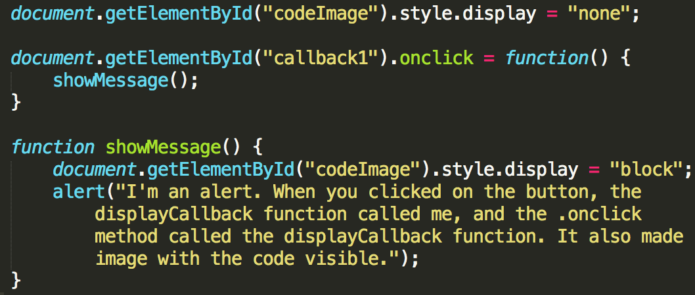

As you already know, in JavaScript almost everything is an Object, and of course functions are of the type Object. That means they can be stored in variables, and passed as arguments to other functions. They can be created inside functions and also returned from functions.
You can think functional programming as a paradigm in which functions are passed to other functions as arguments. Callback functions is a way of doing just that.
With callbacks, we are addressing the Synchronicity issue where functions will be called and transmitted at the same time. A callback is asynchronous code in nature. ASYNCHRONOUS: that is not occurring at predetermined or regular intervals. Data can be transmitted intermittently. So different callbacks can be executed and once the callback function finishes it can transmit its result whenever it's done without waitng for other callback functions to finished.
A Callback function responds to a pattern.
When we pass the callback function as an argument to the other function, at this point, is just a definition. It is NOT! executed immediately. Later it is called back, inside the function body. This callback function because is a closure can access the containig functions variables and the variables from the global scope.
The easiest way to implement it is using GlobalEventHandlers.onclick. This onclick method takes a callback function as a parameter. Clicking in the button will show an alert.
An anonymous function can be defined in the parameter of the containing function, or the callback function can be named and declared, and the name passed to the function parameter. Let's take a look at the next example.
Let's go to a market and buy some fruit. By clicking in each fruit label you are using the HTML Event Mouse Event Attribute method and passing a function to it that trigger more functions as well. The result is that the total cost of the fruits you've selected is shown below.
Your total is $:
The two examples above use the onclick method
Callbacks allow the library methods to be easily customized and/or extended. Every time you need to transform your unnecessary repeated code pattern into more abstract/generic function, callbacks come to the rescue. Let's say we notice that some part of our logic is repeated in both of the functions. We know that having one and the same piece of code in different places is unnecessary and hard to maintain.
If you don't do this and the callback parameter is not, we will get an error
A classic example of this a jQuery AJAX function.
Click here to see a jQuery AJAX function in action To Be Added
Because of the particular behavior of this, if the call back function contains this, we have to use one of the two methods available to the function object. The Call method or the Apply method, otherwise the this object will pint to the window object in the browser or it will point to the object of the containing method.
Let's have a look at a case for this
Sometimes pretty a big number level of callbacks can coexist making the code difficult to understand. The solution to this problem is to: